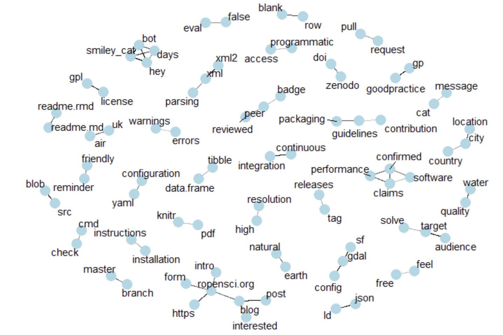
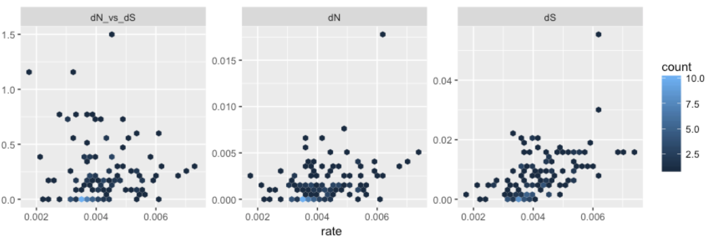
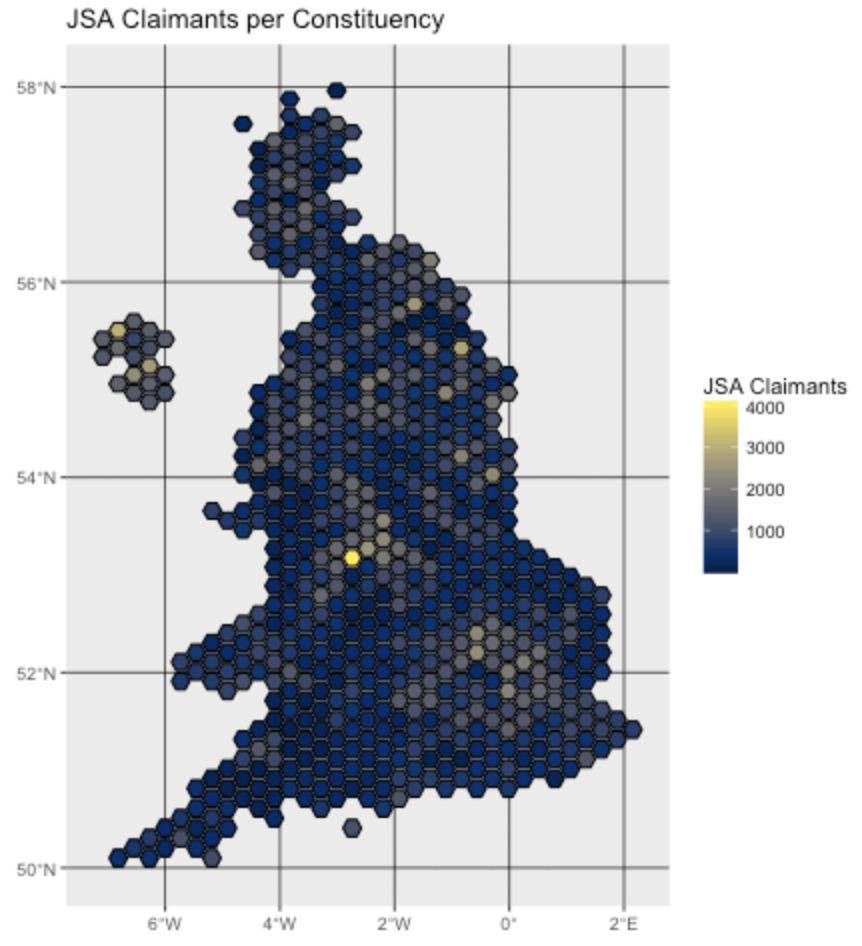
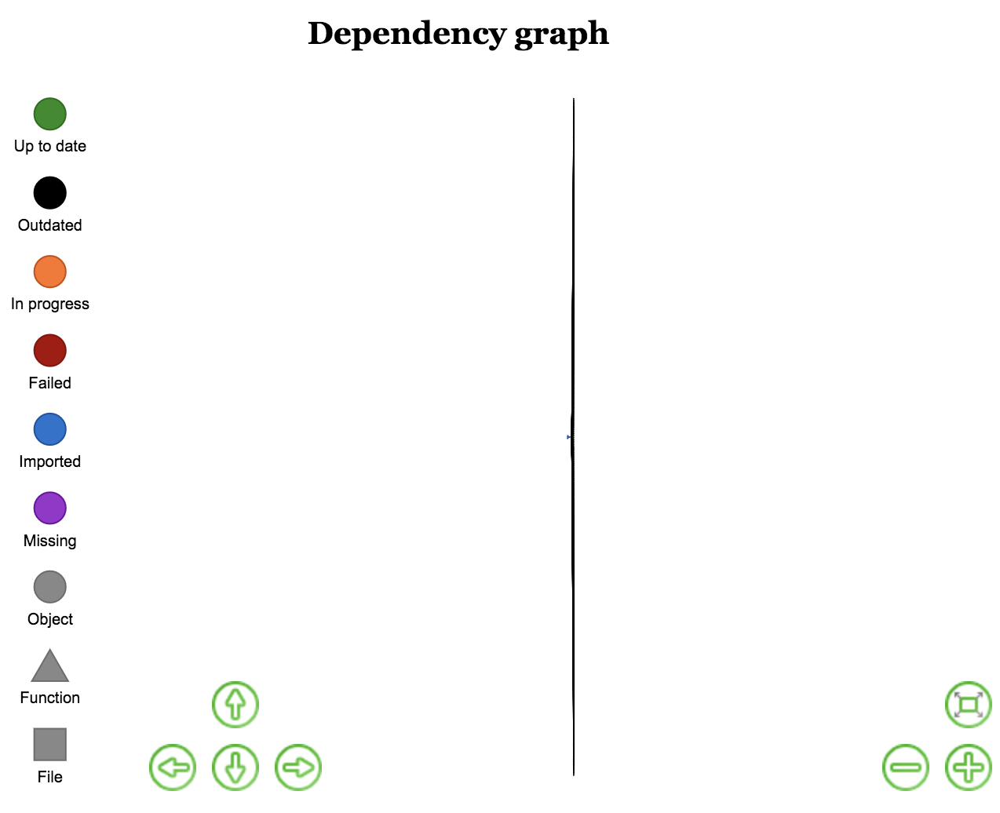

May 21, 2018
Software 📦
CRAN:  GitHub:
GitHub: 
New packages
- A new package
vcr(v0.1.0) is on CRAN.vcrrecords HTTP calls to disk - main use case is caching HTTP requests in test suites. The logic of matching HTTP requests is done with our webmockr package. vcr is a port from Ruby land where the gem of the same name been battle tested and ported to many other languages. Check out the in progress http testing book to get started.

Releases
- A new version (
v0.7.2) ofritisis on CRAN - an R client for ITIS (Integrated Taxonomic Information Service). See the ritis release notes for details. Check out the ritis vignette to get started.
- A new version (
v0.2.4) ofstplanris on CRAN, tools for transport planning, including origin-destination analysis, route allocation and modelling travel patterns. See the stplanr release notes for details. Check out the stplanr docs to get started.
New function
geo_length()! - A new version (
v0.2.0) ofbomrangis on CRAN, an R interface to Australian Government Bureau of Meteorology data. See the bomrang release notes for details. Check out the bomrang docs to get started.
new function
get_historical(): retrieves historical daily rainfall, min/max temperatures, or solar exposure - A new version (
v0.3.0) ofrandgeois on CRAN - a package that generates random GeoJSON and WKT. See the randgeo release notes for details. Check out the randgeo docs to get started.
new fxns
geo_linestringandwkt_linestringthx 2 @samuelbosch - A new version (
v0.2.6) ofwebmockris on CRAN, an R client for doing HTTP request mocking. See the webmockr release notes for details. Check out the webmockr README to get started.
integration w/ vcr 🎉🎉
- A new version (
v1.7) ofpdftoolsis on CRAN, the best pdf parser for R. See the pdftools NEWS for details. Check out the pdftools README to get started.
something about autobrew
- A new version (
v0.2.3) ofgetCRUCLdatais on CRAN, an interface for working with CRU CL v. 2.0 climatology data. See the getCRUCLdata release notes for details. Check out the getCRUCLdata docs to get started.
fix missing import for
rappdirs - A new version (
v0.0.7) ofosmdatais on CRAN, the OpenStreetMap R client. See the osmdata release notes for details. Check out the osmdata docs to get started.
minor things
- A new version (
v0.1.6) offingertipsRis on CRAN, Fingertips Data for Public Health. See the fingertipsR NEWS for details. Check out the fingertipsR vignettes to get started.
new fxns
nearest_neighbours()&indicator_order() - A new version (
v1.9) ofmagickis on CRAN; bindings to ImageMagick. See the magick release notes for details. Check out the magick vignette to get started.
new function
image_attributes() - A new version (
v1.2) ofcld2is on CRAN - R wrapper for Google’s Compact Language Detector 2. Check out the cld2 README to get started. - A new version (
v1.0) ofwritexlis on CRAN, a portable, light-weight data frame to xlsx exporter. See the writexl release notes for details. Check out the writexl README to get started.
save R
Datetypes as proper datetime strings; update vendored libxlswriter
Archived
- solr has been permanently archived on CRAN - it has been replaced by the fresh and new solrium. Check out solrium if you need to work with Solr from R.
- dvn has been archived. See package dataverse instead.
Software Review ✔
We accept community contributed packages via our onboarding system - an open software review system, sorta like scholarly paper review, but way better. We’ll highlight newly onboarded packages here. A huge thanks to our reviewers, who do a lot of work reviewing (see the blog post on our review system), and the authors of the packages!
If you want to be a reviewer fill out this short form, and we’ll ping you when there’s a submission that fits in your area of expertise.
The following two packages were recently submitted:
- oec > Observatory of Economic Complexity API Wrapper and Utility Program
- Author: Mauricio Vargas
- Issue: ropensci/onboarding#217
- Reviewers: not assigned yet
- infx > OpenBIS API access to the InfectX data repository
- Author: Nicolas Bennett
- Issue: ropensci/onboarding#218
- Reviewers: not assigned yet
On the blog
main blog
Maëlle Salmon, from the rOpenSci team, is writing a 3 post series about a data-driven overview of rOpenSci onboarding. She introduces the series in a post Our package reviews in review: Introducing a 3-post series about software onboarding data
- In the third and final post in the series Maëlle wrote about The social weather of rOpenSci onboarding system

Guangchuang Yu wrote a post called treeio: Phylogenetic data integration regarding his recently onboarded package treeio; check out the review at ropensci/onboarding#179

technotes
Evan Odell wrote a post called Nomisr - Access ‘Nomis’ UK Labour Market Data about his recently onobarded package nomisr; check out the review at ropensci/onboarding#190

Mitchell O’Hara-Wild wrote about the package icon developed at rOpenSci OzUnconf 2017: icon: web icons for rmarkdown
Will Landau wrote about the package drake in a post: drake’s improved high-performance computing power; see the review at https://github.com/ropensci/onboarding#156

Use cases
The following five works use/cite rOpenSci software:
- Yee wrote a thesis in which she cited taxize: Spatial Modelling and Wildlife Health Surveillance: A case study of White Nose Syndrome in Ontario 1
- Ahmed et al. cited cRegulome in their paper miRCancerdb: a database for correlation analysis between microRNA and gene expression in cancer 2
- Federer et al. cited rplos in their paper Data sharing in PLOS ONE: An analysis of Data Availability Statements 3
- Garmendia et al. cited writexl in their paper Effects of nettle slurry (Urtica dioica L.) used as foliar fertilizer on potato (Solanum tuberosum L.) yield and plant growth 4
- Neubauer et al. cited rfishbase in their paper Drivers and rates of stock assessments in the United States 5
In the news
Rachel Tatman of Kaggle did a challenge on Data Cleaning Challenge: Deduplication using our scrubr package
Do you have ♊️duplicate records♊️ in your data? In today's data cleaning challenge we'll learn how to remove both exact and partial duplicates (using @sckottie's scrubr() package). Join in here: https://t.co/DQK2m9WY75
— Rachael Tatman (@rctatman) May 3, 2018
Desi Quintans is working on a new R package taxizehelper that wraps around our package taxize
My first personal #Rstats package is on Github! It's got one function in it, which is a wrapper for parsing the taxize package's output and returning a tidy dataframe of taxonomic information. It was a lot of learning phew https://t.co/p421H39Mjx pic.twitter.com/PBzi3Ci47P
— Desi Quintans (@eco_desi) May 4, 2018
There was an R workshop by many folks recently (Phylogenetic Comparative Methods in R), and included coverage of our package fulltext for text mining the scholarly literature
Splendid R workshops on phylogenetics (@pedrohp_braga), spatial analyses & cartography (@mariehbrice), survival analysis (Julie Landes) & metabarcoding (@AlexisCarteron & Simon Moravan) at @csbq_qcbs R symposium. All material here: https://t.co/jQjwkeB9l6 #rstats. pic.twitter.com/jLdUqzqik0
— Vincent Fugère (@V_Fugere) May 11, 2018
Keep up with rOpenSci
- Mailing list: Sign up with an email address to get this newsletter sent to your inbox -> ropensci.org/#subscribe
- Alternatively, you can subscribe to this newsletter via our XML feed at https://news.ropensci.org/feed.xml or our JSON feed at https://news.ropensci.org/feed.json
- rOpenSci on Twitter: @ropensci
- The rOpenSci blog at ropensci.org/blog - you can subscribe in any RSS aggregator, or manually via https://ropensci.org/feed.xml. We also announce new blog posts on our Twitter account.
Footnotes
-
Yee, Lauren. 2018. Spatial Modelling and Wildlife Health Surveillance: A case study of White Nose Syndrome in Ontario. Theses and Dissertations (Comprehensive). 2040. http://scholars.wlu.ca/etd/2040 ↩
-
Ahmed, M., Nguyen, H., Lai, T., & Kim, D. R. (2018). miRCancerdb: a database for correlation analysis between microRNA and gene expression in cancer. BMC Research Notes, 11(1). https://doi.org/10.1186/s13104-018-3160-9 ↩
-
Federer, L. M., Belter, C. W., Joubert, D. J., Livinski, A., Lu, Y.-L., Snyders, L. N., & Thompson, H. (2018). Data sharing in PLOS ONE: An analysis of Data Availability Statements. PLOS ONE, 13(5), e0194768. https://doi.org/10.1371/journal.pone.0194768 ↩
-
Garmendia, A., Raigón, M. D., Marques, O., Ferriol, M., Royo, J., & Merle, H. (2018). Effects of nettle slurry (Urtica dioica L.) used as foliar fertilizer on potato (Solanum tuberosum L.) yield and plant growth. PeerJ, 6, e4729. https://doi.org/10.7717/peerj.4729 ↩
-
Neubauer, P., Thorson, J. T., Melnychuk, M. C., Methot, R., & Blackhart, K. (2018). Drivers and rates of stock assessments in the United States. PLOS ONE, 13(5), e0196483. https://doi.org/10.1371/journal.pone.0196483 ↩